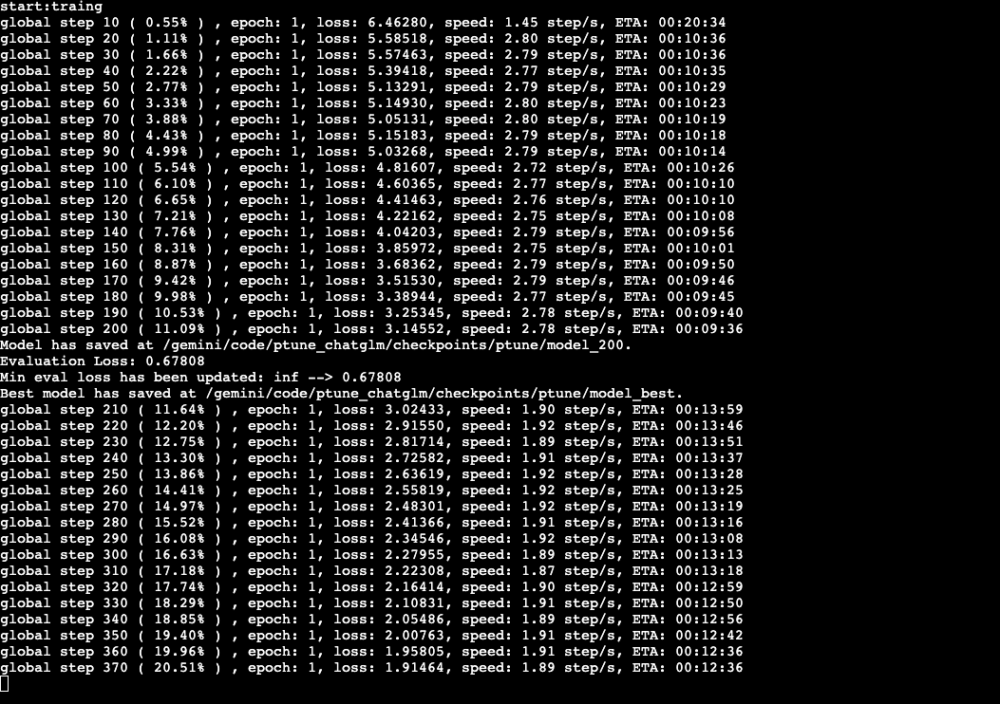
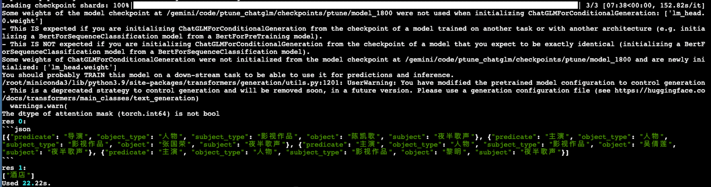

首页 / ChatGLM 多任务微调：LoRA 信息抽取与分类 / 第 3 章
🔧 LoRA 微调 ChatGLM 的实现、训练与预测
🧭
工程实践提示：示例中的模型地址、数据库账号和密钥均应通过环境变量或独立配置文件注入；部署前还需补充权限控制、输入校验、超时重试、日志脱敏、来源引用与离线评估。
学习目标
- 掌握基于ChatGLM+LoRA方式模型搭建代码的实现.
- 掌握模型的训练,验证及相关工具代码的实现.
- 掌握使用模型预测代码的实现.
模型搭建
本项目中完成ChatGLM+LoRA模型搭建、训练及应用的步骤如下（注意：因为本项目中使用的是ChatGLM预训练模型，所以直接加载即可，无需重复搭建模型架构）: - 1.实现模型工具类函数 - 2.实现模型训练函数,验证函数 - 3.实现模型预测函数
1. 实现模型工具类函数
- 目的：模型在训练、验证、预测时需要的函数
- 代码路径：llm_tuning/ptune_chatglm/utils
- utils文件夹共包含1个py脚本：common_utils.py
1.1 common_utils.py
-
目的：定义数据类型转换类、分秒时之间转换以及模型保存函数。
-
脚本里面包含一个类以及两个函数：CastOutputToFloat、second2time()以及save_model()
- 定义CastOutputToFloat类
- 定义second2time()函数
- 定义save_model()
-
代码路径：llm_tuning/ptune_chatglm/utils/common_utils.py
代码如下：
Python
import torch import torch.nn as nn import copy from ptune_chatglm.glm_config import ProjectConfig pc = ProjectConfig() class CastOutputToFloat(nn.Sequential): """ 继承自nn.Sequential的类，用于将模型的输出转换为浮点类型。 该类重写了forward方法，以确保模型输出被转换为torch.float32类型。 主要用途是在模型定义中作为最后一层，以确保输出类型符合预期。 """ def forward(self, x): ''' 定义模型的前向传播过程，并将输出转换为浮点类型。 :param x: (Tensor): 输入张量，类型不受限。 :return: Tensor: 经过模型前向传播后的输出张量，转换为torch.float32类型。 ''' # 调用父类的forward方法进行前向传播，然后将输出转换为torch.float32类型 return super().forward(x).to(torch.float32) def second2time(seconds: int): ''' 将秒转换成时分秒。 :param seconds: (int): 需要转换的秒数。 :return: str: 转换后的小时、分钟和秒，以字符串形式返回。 ''' # 将秒数转换为分钟和秒 m, s = divmod(seconds, 60) # 打印中间结果，分钟数和秒数 # print(f'm-->{m}') # print(f's-->{s}') # 将分钟数转换为小时和分钟 h, m = divmod(m, 60) # 打印中间结果，小时数和分钟数 # print(f'h-->{h}') print(f'm-->{m}') # 返回格式化的小时、分钟和秒 return "%02d:%02d:%02d" % (h, m, s) def save_model(model, cur_save_dir: str): ''' 存储当前模型。 该函数根据条件判断，要么将模型直接保存，要么在保存前将LoRA（Low-Rank Adaptation）参数与原始模型合并后再保存。 这样做是为了确保无论是原始模型还是使用LoRA训练的模型，都可以被正确地保存和后续使用。 :param model: 待保存的模型。这可以是任何已经训练好的transformers模型。 :param cur_save_dir: (str): 存储路径。表示模型将被保存到的目录路径。 :return: ''' # 检查是否使用了LoRA（低秩适应）技术 if pc.use_lora: # merge lora params with origin model # 如果使用了LoRA，首先创建模型的深拷贝，以避免修改原始模型 merged_model = copy.deepcopy(model) # 直接保存的话，只会保存adapter即LoRA模型的参数，因此需要合并后再保存 merged_model = merged_model.merge_and_unload() # 保存合并后的模型到指定路径 merged_model.save_pretrained(cur_save_dir) else: # 如果没有使用LoRA，直接保存模型到指定路径 model.save_pretrained(cur_save_dir)
2. 实现模型训练函数,验证函数
-
目的：实现模型的训练和验证
-
代码路径：llm_tuning/ptune_chatglm/train.py
-
脚本里面包含两个函数：model2train()和evaluate_model()
代码如下：
Python
import sys import os project_root = os.path.join(os.path.dirname(os.path.abspath(__file__)), '../') # print(f'project_root-->{project_root}') sys.path.append(project_root) import time import torch import peft # autocast是PyTorch中一种混合精度的技术，可在保持数值精度的情况下提高训练速度和减少显存占用。 # 该方法混合精度训练，如果在CPU环境中不起任何作用 from torch.cuda.amp import autocast as autocast from transformers import AutoConfig, AutoModel, get_scheduler, AutoTokenizer from ptune_chatglm.data_handle.data_loader import get_data from ptune_chatglm.glm_config import ProjectConfig from ptune_chatglm.utils.common_utils import CastOutputToFloat, second2time, save_model pc = ProjectConfig() def model2train(): """ 训练模型的主要函数。本函数完成从模型配置、数据加载到训练和评估的全过程。 """ # 1.获取训练和验证数据加载器 train_dataloader, dev_dataloader = get_data() # 2.加载模型 # 加载预训练的tokenizer tokenizer = AutoTokenizer.from_pretrained(pc.pre_model, trust_remote_code=True) # 加载预训练模型的配置 config = AutoConfig.from_pretrained(pc.pre_model, trust_remote_code=True) # print(f'config-->{config}') # 如果使用ptuning微调手段 if pc.use_ptuning: # 设置前缀序列长度 config.pre_seq_len = pc.pre_seq_len # 可以指定是P-tuning-V1或者V2 config.prefix_projection = pc.prefix_projection # 加载预训练模型ChatGLM-6B model = AutoModel.from_pretrained(pc.pre_model, config=config, trust_remote_code=True) print(f'model-->{model}') # for name, prameters in model.named_parameters(): # print(f'prameters类型--》{prameters.dtype}') # model.half()将模型数据类型从默认的float32精度转换为更低的float16精度，减少内存 model = model.half() # print(model) # 不进行缓存，减少内存 model.config.use_cache = False # 梯度检查点是一种优化技术，用于在反向传播过程中降低内存使用，保存部分激活值，未保存的反向传播时重新计算 model.gradient_checkpointing_enable() # 对输入层进行require_grads（进行参数更新，即微调） model.enable_input_require_grads() # print(f'model.transformer.prefix_encoder-->{model.transformer.prefix_encoder}') # 如果pc对象的use_ptuning属性为真，则执行以下操作 if pc.use_ptuning: # 将模型的transformer部分的prefix_encoder组件转换为float精度 model.transformer.prefix_encoder.float() # 如果使用lora方法微调 if pc.use_lora: # 将模型的输出头：数据类型转换为float32(确保) model.lm_head = CastOutputToFloat(model.lm_head) # 定义LoRA配置 peft_config = peft.LoraConfig( task_type=peft.TaskType.CAUSAL_LM, # 传统的语言模型 inference_mode=False, # 推理时为True，比如决定是否使用dropout r=pc.lora_rank, # 低秩矩阵维度 lora_alpha=32, # 缩放系数 lora_dropout=0.1 ) # print(f'peft_config--》{peft_config}') # 根据LoRA配置获取LoRA模型 model = peft.get_peft_model(model, peft_config) # print('*'*80) # 将模型移动到指定设备 model = model.to(pc.device) # 打印模型中所有可训练参数的信息 model.print_trainable_parameters() # 定义不需要权重衰减的参数名称列表 no_decay = ["bias", "LayerNorm.weight"] # 初始化优化器参数分组，对模型中的参数进行精细控制的优化处理 optimizer_grouped_parameters = [ { # 分组1：包含所有适用权重衰减的参数 "params": [p for n, p in model.named_parameters() if not any(nd in n for nd in no_decay)], "weight_decay": pc.weight_decay, # 适用预设的权重衰减率 }, { # 分组2：包含所有不适用权重衰减的参数 "params": [p for n, p in model.named_parameters() if any(nd in n for nd in no_decay)], "weight_decay": 0.0, # 不适用权重衰减 }, ] # 初始化AdamW优化器 optimizer = torch.optim.AdamW(optimizer_grouped_parameters, lr=pc.learning_rate) # 根据训练轮数计算最大训练步数，以便于scheduler动态调整lr num_update_steps_per_epoch = len(train_dataloader) # 指定总的训练步数，它会被学习率调度器用来确定学习率的变化规律，确保学习率在整个训练过程中得以合理地调节 max_train_steps = pc.epochs * num_update_steps_per_epoch # 预热阶段的训练步数 warm_steps = int(pc.warmup_ratio * max_train_steps) # 初始化学习率调度器 lr_scheduler = get_scheduler( name='linear', optimizer=optimizer, num_warmup_steps=warm_steps, num_training_steps=max_train_steps, ) # 3.定义训练的一些参数变量 loss_list = [] tic_train = time.time() global_step, best_eval_loss = 0, float('inf') # 4.开始训练循环 for epoch in range(1, pc.epochs + 1): print("开始训练") model.train() for batch in train_dataloader: if pc.use_lora: """ torch.cuda.amp.autocast是PyTorch中一种混合精度的技术（仅在GPU上训练时可使用） 混合精度训练主要涉及16位浮点数（FP16）和32位浮点数（FP32）的组合使用： FP16：提供更高的计算速度和更低的内存使用，但是由于其表示范围较小，可能会导致数值不稳定或溢出。 FP32：用于保持数值稳定性，尤其是在权重更新阶段。 """ with autocast(): loss = model( input_ids=batch['input_ids'].to(dtype=torch.long, device=pc.device), labels=batch['labels'].to(dtype=torch.long, device=pc.device) ).loss else: loss = model( input_ids=batch['input_ids'].to(dtype=torch.long, device=pc.device), labels=batch['labels'].to(dtype=torch.long, device=pc.device) ).loss # 梯度清零 optimizer.zero_grad() # 反向传播 loss.backward() # 梯度更新 optimizer.step() # 更新学习率 lr_scheduler.step() loss_list.append(float(loss.cpu().detach())) global_step += 1 if global_step % pc.logging_steps == 0: time_diff = time.time() - tic_train loss_avg = sum(loss_list) / len(loss_list) print("全局步骤 %d ( %02.2f%% ) , 轮次: %d, 损失: %.5f, 速度: %.2f step/s, ETA: %s" % ( global_step, global_step / max_train_steps * 100, epoch, loss_avg, pc.logging_steps / time_diff, second2time(int(max_train_steps - global_step) / (pc.logging_steps / time_diff)) )) tic_train = time.time() # cur_save_dir = os.path.join(pc.save_dir, "model_%d" % global_step) # save_model(model, cur_save_dir) # print(f'Model has saved at {cur_save_dir}.') # 5.评估模型 eval_loss = evaluate_model(model, dev_dataloader) print("评估集的损失为: %.5f" % (eval_loss)) if eval_loss < best_eval_loss: print( f"最小的损失已经更新：: {best_eval_loss:.5f} --> {eval_loss:.5f}" ) best_eval_loss = eval_loss cur_save_dir = os.path.join(pc.save_dir, "model_best") save_model(model, cur_save_dir) tokenizer.save_pretrained(cur_save_dir) print(f'最好的模型已经保存在： {cur_save_dir}.') tic_train = time.time() def evaluate_model(model, dev_dataloader): # 将模型设置为评估模式，以便在验证时不进行梯度更新 model.eval() # 初始化一个空列表来存储每个batch的loss值 loss_list = [] # 在torch.no_grad()上下文中禁用梯度计算，以减少内存消耗和加快计算速度 with torch.no_grad(): # 遍历验证数据加载器中的每个batch for batch in dev_dataloader: # 如果使用了LoRA（Low-Rank Adaptation）技术 if pc.use_lora: # 使用autocast()自动混合精度训练，以提高效率和减少内存消耗 with autocast(): # 进行模型前向传播并计算loss loss = model( input_ids=batch['input_ids'].to(dtype=torch.long, device=pc.device), labels=batch['labels'].to(dtype=torch.long, device=pc.device) ).loss else: # 如果不使用LoRA，直接进行模型前向传播并计算loss loss = model( input_ids=batch['input_ids'].to(dtype=torch.long, device=pc.device), labels=batch['labels'].to(dtype=torch.long, device=pc.device) ).loss # 将计算得到的loss值从GPU转移到CPU，并 detach 以释放计算图，防止内存泄漏 # 然后将其作为浮点数添加到loss列表中 loss_list.append(float(loss.cpu().detach())) # 返回平均loss值，即loss列表的总和除以loss的数量 return sum(loss_list) / len(loss_list) if __name__ == '__main__': model2train()
- 输出结果:

3. 实现模型预测函数
- 目的：加载训练好的模型并测试效果
- 代码路径：llm_tuning/prompt_tasks/ptune_chatglm/inference.py
具体代码：
Python
import sys import os project_root = os.path.join(os.path.dirname(os.path.abspath(__file__)), '../') # print(f'project_root-->{project_root}') sys.path.append(project_root) import time import torch from transformers import AutoTokenizer, AutoModel from ptune_chatglm.glm_config import ProjectConfig pc = ProjectConfig() def inference(model, tokenizer, instuction: str, sentence: str): with torch.no_grad(): input_text = f"Instruction: {instuction}\n" if sentence: input_text += f"Input: {sentence}\n" input_text += f"Answer: " batch = tokenizer(input_text, return_tensors="pt") out = model.generate( input_ids=batch["input_ids"].to(pc.device), max_new_tokens=max_new_tokens, temperature=0 ) out_text = tokenizer.decode(out[0]) answer = out_text.split('Answer: ')[-1] return answer if __name__ == '__main__': max_new_tokens = 300 model_path = os.path.join(pc.save_dir, 'model_best') tokenizer = AutoTokenizer.from_pretrained( model_path, trust_remote_code=True ) model = AutoModel.from_pretrained( model_path, trust_remote_code=True ).half().to(pc.device) samples = [ { 'instruction': "现在你是一个非常厉害的SPO抽取器。", "input": "下面这句中包含了哪些三元组，用json列表的形式回答，不要输出除json外的其他答案。\n\n73获奖记录人物评价：黄磊是一个特别幸运的演员，拍第一部戏就碰到了导演陈凯歌，而且在他的下一部电影《夜半歌声》中演对手戏的张国荣、吴倩莲、黎明等都是著名的港台演员。", }, { 'instruction': "你现在是一个很厉害的阅读理解器，严格按照人类指令进行回答。", "input": "下面子中的主语是什么类别，输出成列表形式。\n\n第N次入住了，就是方便去客户那里哈哈。还有啥说的" } ] start = time.time() for i, sample in enumerate(samples): res = inference( model, tokenizer, sample['instruction'], sample['input'] ) print(f'res {i}: ') print(res) print(f'Used {round(time.time() - start, 2)}s.')
- 结果展示

小节总结
- 本小节实现了基于ChatGLM+LoRA模型的构建, 并完成了训练和测试评估。